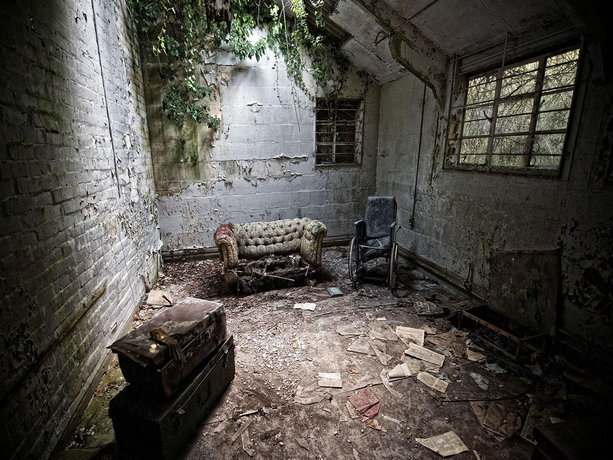

Tras abrir el espacio para acceder, finalmente te encuentras en el lugar. Al darte cuenta de que el interruptor de la luz no funciona,tomas tu teléfono celular y enciendes la linterna. Revisas el lugar a simple vista y te encuentras que está desordenada, entre el desorden encuentras un hacha y decides guardarla como arma. Al pasearte por la cabaña escuchas ruidos provenientes de dos habitaciones, cuyas puertas no te permiten ver sus interiores, tienes que escoger una para investigar.
La puerta que escoges es...